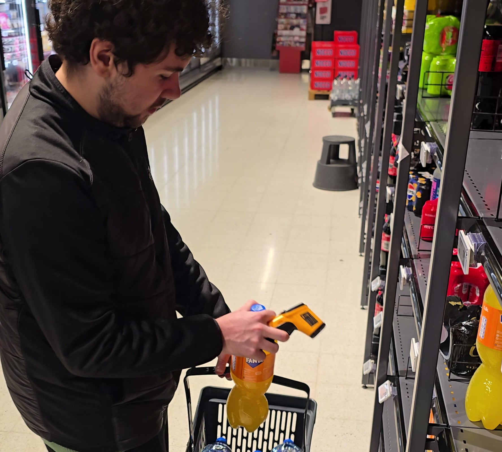

Oat drink, one litre, one eighty-nine. Nod to add.
Captions
Oat drink, one litre, one eighty-nine. Nod to add.
Added oat drink.
Queue and unload
One hand short

83%
of visually impaired consumers find information on food packaging difficult or impossible to access (GS1 UK)
Ceiling cameras: a refit of every store. Amazon removed them from its Fresh stores in 2024.
Photo
PHOTO: first-person, two hands hold a rye bread
assets/photos/rye-bread.jpg
We moved the camera.
Captions
Rye bread, two sixty. Nod to add.
Photo
PHOTO: first-person, two hands hold a rye bread
assets/photos/rye-bread.jpg
We moved the camera.
Captions
Rye bread, two sixty. Nod to add.
Added rye bread. Total four forty-nine.
Captions
Checkout 3 at Demo Market. Two items, four euros forty-nine. Nod to pay.
Unloaded: nothing.
Scanned: nothing.
Touched: nothing.
Installed by the store: nothing.
Glance is not a shopping app.
Glance is a protocol.
Photo
PHOTO: a bus door with a Glance code sticker
assets/photos/bus-door.jpg
Captions
Line 4 to the harbor. Single ticket. Nod to buy.
Ticket gate
Vending machine
Parking meter
Restaurant table
Any place that can show a code can take a nod.
Team
Four builders who want to make this real.
Alessandro De Biasi
MSc AI and Cybersecurity, University of Udine and Klagenfurt (double degree)
Federico Bertossi
BSc Computer Science, University of Udine. Software Engineer
Marco Ceccon
Software Engineer
Michele Lizzit
MSc Cybersecurity, ETH Zurich. PhD candidate in Computer Science, University of Udine
Look. Nod. Done.
Glance tells, nod buys: a protocol for paying with your glasses.
Our ask: we want to keep building Glance, full time, with Meta.
Meta Glance · Junction 2026. An independent project, built with Ray-Ban Meta glasses and Meta’s Wearables Device Access Toolkit. Not a product of Meta.
Backup
Pages for the questions of the judges.
B1The protocol
B2Glance for stores
B3Under the hood
B4When a nod counts
B5Consent and privacy
B6Why it matters to Meta
B7Competition
B8Go-to-market
B9Glance beyond stores
Backup · The protocol
The Glance protocol links a person, a place, and a nod.
Backup · Glance for stores
Glance for stores
Our initial use-case focuses on usage within stores, and is ready to deploy out of the box.
Full hands. Scan-as-you-shop already runs in 67 S Group stores in Finland, and it still costs you a hand. Glance gives it back.
Blind and low-vision shoppers. 83% of visually impaired shoppers cannot easily access packaging information (GS1 UK), and a self-checkout is a flat touchscreen. Glance reads the label aloud and replaces the touchscreen with a nod.
No refit. Other approaches, such as ceiling cameras, needed a refit of every store, and Amazon removed them from its Fresh stores in 2024. Glance puts the camera on the shopper.
Quick adoption. Glance fits the store as it is, with no new hardware. The store gives Meta access to its list of products and prices, and its checkout screens show one code. If the store has exit barriers, your glasses send a barcode to your phone after you pay, and it opens them.
Glance tells, nod buys. Looking never changes your cart. A nod counts only for the product you just heard, while it is still in view.
No guessing. Prices and allergen warnings come from the store catalog. For look-alike products the voice asks you to scan the product barcode.
Works for every ability. Every action also works by voice, touchpad or a phone button, and every spoken line is captioned.
Backup · Under the hood
Under the hood
The store prototype is built on the Meta Wearables Device Access Toolkit with Gemini recognition. Glance recovers from a lost connection, a paused session and a low battery. If a fault cannot be recovered, it fails safely: no exit barcode is issued, the barrier stays closed, and you pay at a regular checkout with your cart still on your phone.
7 fps
camera stream of the glasses, scanned on the phone for codes
30 Hz
head motion of the glasses, read for a nod and a shake
1.2 s
median time of one call that names a product by sight
Measured on 14 November 2026: 146 frames
Try Glance for store owners today on Ray-Ban Meta glasses!
Backup · When a nod counts
You never wait for the voice: a nod counts while it speaks.
Nod while the voice speaks
A nod or a shake during the line stops the voice at once. Confirmed on Ray-Ban Meta glasses on 14 November 2026.
Phone locked in a pocket
The camera, the voice, and the nods run with the screen off. Confirmed on Ray-Ban Meta glasses on 14 November 2026.
Backup · Consent and privacy
Nothing happens by accident, and nobody nearby is exposed.
Consent
Looking never changes your cart. A nod counts only for the product you just heard, while it is still in view.
At a checkout, a nod pays only while its code is in view.
A shake cancels: “Checkout cancelled. Your cart is safe.” A shake after an add takes it back.
A nod is consent, not identity. A fingerprint above an amount is one server setting away.
Privacy
The phone pixelates each face before a frame leaves it. If detection fails, the frame is dropped.
The phone reads the code itself. The server gets text, not a picture of the place.
The server keeps a frame in memory for one call and writes none to disk.
A team photo, pixelated as the phone does it.
Backup · Why it matters to Meta
For Meta: a reason to wear the glasses every day.
Works today
Ray-Ban Meta and the Device Access Toolkit. A place adds no hardware beyond a screen or a sticker.
A platform, not an app
A place registers with the Glance server and gets the result when you nod.
A daily habit
Paying, boarding, opening a gate: moments that come back every day.
Inclusive by design
Hands-free and eyes-free from the first step.
Our ask: we want to keep building Glance, full time, with Meta.
A working loop today, a path from one checkout to the glasses.
Backup · Competition
Others solve one part. Glance closes the loop.
Way to pay or act
Hands free
No screen to read
No new store hardware
Spoken offer, then a yes
Status
Meta Glance
Prototype, mock payment
Scan and go app, S Group
phone app
67 stores in Finland
Self-checkout kiosk
Common in stores
Amazon Just Walk Out
Left US Amazon Fresh, 2024
Phone tap or QR payment
a terminal
Everywhere
“Hey Meta, scan and pay”
not stated
Test in India, Oct 2025
Meta AI and Be My Eyes
Shipping, no payment
Glance tells, nod buys: the place states its offer in your ear, and a nod counts only while you look at it. A protocol for any place, not one store system.
Backup · Go-to-market Roadmap
Start at one checkout. Grow to every place that can show a code.
First wearers: the people who gain the most. Blind and low-vision shoppers, and anyone with full hands.
Backup · Glance beyond stores Vision
Our vision is a world where you leave your phone at home, and you do everything in a glance.
On glasses with a display, the same prompt in the lens: a mockup on the Meta Ray-Ban Display toolkit. In the future, the same glance and nod can send money to a friend.


 On glasses with a display, the same prompt in the lens: a mockup on the Meta Ray-Ban Display toolkit.
On glasses with a display, the same prompt in the lens: a mockup on the Meta Ray-Ban Display toolkit.